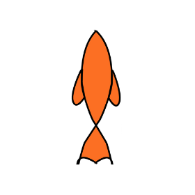
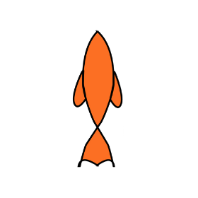

¿QUIENES SOMOS?
Somos nadadoras. Nadamos ...
Estamos sumergidas en las voces de aquellos que nos dicen que deberíamos
ser de otra forma y no vivir plenamente en los cuerpos que tenemos.
Piernas derechas, torso erguido, zapatos atados, boca cerrada y sonrisa
amable. No tiene que haber baba chorreando, ni piernas torcidas, ni
rengueras prominentes, ni hablar muy lento o muy rápido.
Hundidas en los discursos de otros que no tienen nuestro cuerpo, ni
nuestras piernas, mucho menos nuestras manos, ni esta voz: una voz
disca, es que braceamos para ser escuchadas, ser oídas, ocupar espacio y
hacernos carne de nuestras realidades.
¿Pero qué color, tono, forma tiene esta voz disca?
Forma de “barracuda”. Este "tigre de los mares", , se lo conoce tanto
por su formidable tamaño como por su acreditada hostilidad hacia el ser
humano. ¿Hostil? ¿De dónde viene esa hostilidad?¿Supervivencia?¿
instinto cazador?¿O simplemente el deseo de vivir?
Estancadas frente a una escalera o a un bondi que no quiere subirnos es
que nos convertimos,de ahora en más, en “tigresas de los océanos”,
nadadoras profesionales del sarcasmo. Porque la supervivencia no nos
transformó en seres violentos pero sí en personas capaces de reírse de
uno mismo, del otro y con el otro.
Nuestra realidad disca, nuestras vivencias, en este sitio no serán
habladas desde la solemnidad de las buenas formas, porque las buenas
formas se nos quedaron atascadas entre los dientes.
Cuidado, rengas intentando respirar adultez. Quien no se ahoga,
flota.
Somos barracudas, Yesi & Euge.
Un poco más sobre nosotras
Eugenia Aloise nació en una clínica en San Fernando, tres meses antes de lo esperado.
Sabe dos cosas: no le gustan las infusiones y le gusta mucho el arte, así que solo se dedica
a absorber todo tipo de lectura. Cuando le preguntan sobre la discapacidad dice que es algo
parecido a hacer las cosas como el resto de la gente pero de forma distinta y a otro tiempo.
Las ruedas son sus aliadas. No camina con los pies, probó con las manos y tampoco le salió.
Yesica Daniela Ochoa nació en Quilmes, conurbano bonaerense. Es Licenciada y docente en Comunicación Social.
Fue ayudante adscripta en la Cátedra de Laboratorio de Escrituras y Lecturas II, en la Facultad de Periodismo
y Comunicación Social de La Plata. Por momentos, es escritora. Algunos de sus cuentos se pueden encontrar
en antologías digitales publicadas por la editorial de esa misma casa de estudio.
Su primera novela se llamó “La Trastornada”. Ella si camina con las manos, los bastones son sus piernas.